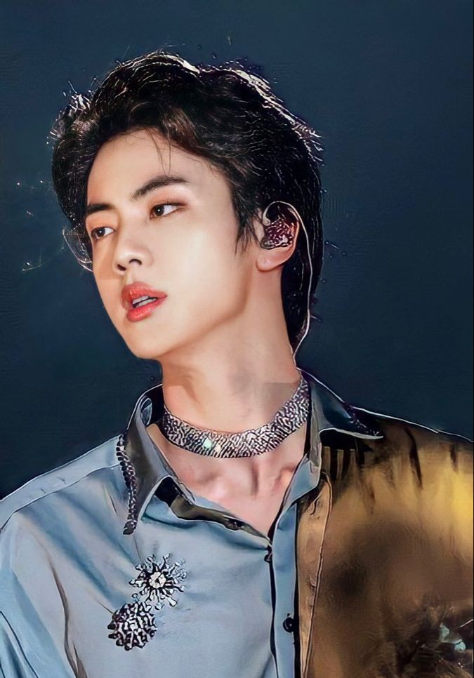

| Full Name | Kim Seok-jin (김석진) |
| Stage Name | Jin (진) |
| Date of Birth | 4 December 1992 |
| Zodiac Sign | Sagittarius |
| Hometown | Gwacheon, Gyeonggi Province, South Korea |
| Positions in BTS | Sub-vocalist, visual |
| BTS Debut Date | 13 June 2013 |
| Education Highlight | Bachelor's degree in Film Studies, Konkuk University |
| Audition Story | Street-scouted while getting off a bus on his way to university classes |
| Training Duration | Approximately 2 to 3 years; signed in mid-2011 |
| Official Group Status | Eldest member; fourth member to join the agency lineup |
Early Life & Hometown
Kim Seok-jin was born in Anyang but moved to the peaceful city of Gwacheon, Gyeonggi Province, when he was just a baby, where he spent his formative years. Growing up in a supportive, well-off family, Jin was initially quite introverted and didn’t have immediate aspirations toward music. In middle school, he even went abroad to Australia as an exchange student.
His life's trajectory shifted in high school after watching the historical K-drama Queen Seondeok, which inspired him to pursue acting professionally so he could move people with his emotions. Keeping true to this dream, he beat immense competitive odds (a 1:210 acceptance ratio) to enrol at Konkuk University in Seoul, majoring in Theater and Film Studies.
The Audition That Changed Everything
Long before joining Big Hit Entertainment, Jin’s striking visuals caught the eye of a talent scout from SM Entertainment during his junior high school days. However, assuming it was a fraudulent scam, he famously ran away and rejected the offer.
His real breakthrough arrived during his early college years. While stepping off a public bus on his way to his acting classes at university, a casting director from Big Hit Entertainment spotted him simply because of his incredible presence and symmetry. He was invited to a private audition, where he originally tried out strictly as an actor rather than a pop idol, having zero formal background in singing or dancing.
Joining BTS & Overcoming the Odds
Big Hit staff recognized his star potential and guided him toward becoming an idol trainee instead. He officially signed his contract in 2011, making him the fourth member to join the group’s foundational lineup. Coming from a background entirely centered around acting, Jin had to start completely from scratch, spending countless hours practicing vocal runs and hip-hop choreography.
He balanced this grueling three-year training regimen while physically attending his university classes in person. He was the final member to officially move into the trainee dorms in July 2012, ultimately cementing his spot as the core visual and emotional sub-vocalist for BTS's historic debut on June 13, 2013.